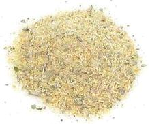

 |
AdoboPuerto Rico - Adobo | ||||
| Makes: Effort: Sched: DoAhead: |
4 oz * 10 min Yes |
A basic Puerto Rican spice mix used for meats, poultry, pork and seafood. This is very unlike in the Philippines, where Adobo is a recipe cooked with vinegar. | |||
|
|
2 2 2 1 1 |
T T T T T |
Garlic Powder Onion Powder Oregano, Dried Salt Pepper, Black |
Make: - (10 min)
|